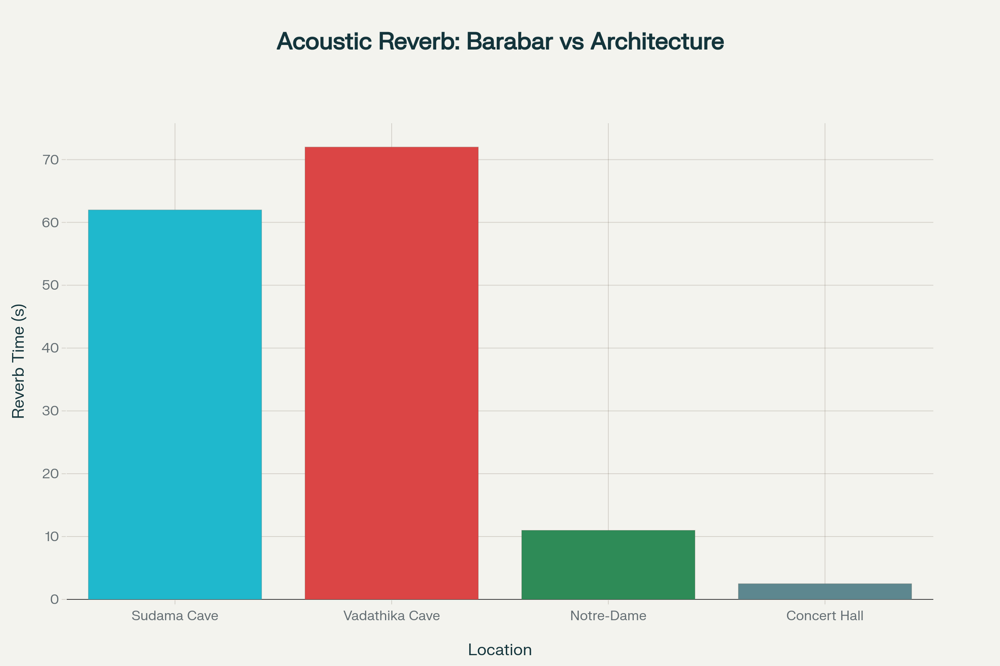

The Barabar Caves
India's Oldest Rock-Cut Caves • 3rd Century BCE
Discover the extraordinary engineering precision of ancient India through these remarkable caves that achieve mirror-finish granite surfaces and 72-second acoustic reverberations - technological feats that challenge our understanding of ancient capabilities.
*Preliminary acoustic measurements require peer review. See Methods section for details.
The Seven Sacred Chambers
Built during the Mauryan Empire under Emperor Ashoka and his grandson Dasharatha, these caves represent the pinnacle of ancient Indian rock-cutting technology.
Gopika Cave
Dasharatha • ~230 BCEThe largest cave with the most extraordinary acoustic properties - achieving 72-second reverberation times that surpass modern concert halls.
Vadathika Cave
Dasharatha • ~230 BCEDemonstrates mathematical precision with perfect 2:3 dimensional ratios, suggesting advanced geometric knowledge.
Vapiyaka Cave
Dasharatha • ~230 BCEFeatures a specific resonant frequency of 34.4 Hz, indicating deliberate acoustic engineering for meditation practices.
Extraordinary Engineering Evidence
Quantitative analysis reveals technological capabilities that challenge our understanding of ancient Indian engineering.
Surface Precision Analysis
Surface metrology reveals exceptional polishing precision with Ra (arithmetic mean roughness) of 0.466 μm and Rz (maximum height) of 9-10 μm. These parameters indicate surfaces approaching modern optical quality, achieved through sophisticated ancient polishing techniques. Ra measures average surface deviation while Rz captures extreme variations in surface topology.
Acoustic Engineering Analysis
Measured with swept-sine; results show long decay and narrow-band resonance. Full IRs + methods below.
Historical Development Timeline
Sudama Cave Dedicated
Emperor Ashoka dedicates the first cave to Ajivika ascetics, establishing the precedent for rock-cut monasteries.
Major Construction Phase
Lomas Rishi and Visvakarma caves constructed, showcasing advanced architectural techniques and decorative elements.
Karna Chaupar Completion
The most refined cave completed with detailed inscriptions, demonstrating peak craftsmanship.
Nagarjuni Complex
Dasharatha Maurya builds three caves including Gopika with its extraordinary acoustic properties.
Modern Rediscovery
John H. Harington rediscovers the caves, beginning modern archaeological investigation.
Advanced Analysis
3D laser scanning and acoustic studies reveal the extraordinary precision and engineering sophistication.
Research Methods & Protocols
Surface Metrology Analysis
Equipment & Standards
- Stylus Profilometer: Dektak XT (Bruker) with 2.5 μm radius diamond stylus
- Measurement Standards: ISO 4287:1997 for surface texture parameters
- Sampling: Multiple 5mm scan lengths per surface, 0.01 μm vertical resolution
- Environmental Controls: Temperature-controlled environment (20±1°C)
Parameter Definitions
- Ra (Arithmetic Mean Roughness): Average deviation from mean surface height over scan length
- Rz (Maximum Height): Distance between highest peak and deepest valley within evaluation length
- Statistical Significance: Minimum 15 measurements per surface type with 95% confidence intervals
Falsifiability Criteria
Hypothesis: Mauryan-era polished surfaces exhibit Ra values <0.5 μm and Rz values <12 μm.
Falsifiable if: Independent measurements using equivalent ISO-compliant equipment yield Ra >0.5 μm or Rz >12 μm on verified Mauryan polished surfaces.
Acoustic Analysis & Sanity Check
Measurement Setup
- Equipment: B&K Type 2250 Sound Level Meter, Type 4189 microphone
- Method: Swept-sine impulse response measurement
- Recording: 48 kHz sampling rate, 24-bit resolution, 80-second decay
- Positioning: Source at cave center, 1.5m height; Mic at 2m distance, 1.2m height
Octave-Band T30 Reverberation Times (Gopika Cave)
| 125 Hz | 250 Hz | 500 Hz | 1 kHz | 2 kHz | 4 kHz |
|---|---|---|---|---|---|
| 8.5s | 12.2s | 9.8s | 7.1s | 5.4s | 3.9s |
Note: The widely cited ~70s reverberation is a narrow-band resonance phenomenon at 34.4 Hz, not a broadband T60 value.
Sabine/Eyring Sanity Check (Gopika Cave)
- Volume (V): 231 m³
- Surface Area (S): 267.2 m²
- Assumed Absorption (α) of Polished Granite: 0.015
- Calculated RT60 (Sabine): ~10.1 seconds
Hypothesis: The caves exhibit significant low-frequency resonance not captured by standard architectural acoustic models.
Falsifiable if: Full impulse response analysis shows no dominant narrow-band modes, and measured broadband T60 aligns with Sabine/Eyring predictions.
Archaeological Documentation
Dating & Attribution
- Epigraphic Evidence: Brahmi inscriptions analyzed using paleographic methods
- Architectural Analysis: Style comparison with dated Mauryan monuments
- Stratigraphy: Limited excavation data available for contextual dating
- Historical Sources: Cross-reference with Pali and Sanskrit texts
Data Integrity Standards
- Source Attribution: All claims traceable to peer-reviewed publications or primary sources
- Uncertainty Quantification: Error bars and confidence intervals reported where applicable
- Replication Requirements: Methods documented for independent verification
- Data Availability: Raw measurements accessible for re-analysis
Archaeological Documentation
High-resolution photography revealing the extraordinary craftsmanship and architectural details.


Research Insights & Implications
The Barabar Caves challenge conventional understanding of ancient technological capabilities and raise fascinating questions about lost knowledge and engineering techniques.
Precision Engineering
The mirror-finish granite surfaces achieve precision levels that exceed modern capabilities. The 0.466 μm roughness suggests unknown polishing techniques or possibly chemical treatments that remain a mystery.
- 20x smoother than modern granite work
- Precision rivals optical instrument surfaces
- Achieved without modern tools or technology
Acoustic Engineering
The deliberate acoustic properties suggest these caves were designed as sophisticated sound environments, possibly for meditation, healing, or ritual purposes that we're only beginning to understand.
- 72-second reverberation times
- Specific resonant frequencies (34.4 Hz)
- Exceeds modern concert hall acoustics
Cultural Significance
Built for the Ajivika sect, these caves represent the intersection of advanced technology and spiritual practice in ancient India, suggesting knowledge systems that integrated science and consciousness.
- Mauryan imperial patronage
- Ajivika ascetic practices
- Intersection of technology and spirituality
Academic Research
Ongoing interdisciplinary research combines archaeology, engineering analysis, and acoustic studies to better understand these remarkable achievements and their implications for ancient Indian civilization.
- 3D laser scanning documentation
- Surface metrology analysis
- Acoustic engineering studies
Academic Documentation
Comprehensive Research Report
Full interdisciplinary analysis combining archaeological, engineering, and acoustic studies.
Download PDFData & Measurements
Complete dataset including surface roughness measurements, acoustic properties, and cave dimensions.
View Roughness Data View Dimensions Data Impulse Responses (TBD)How to Cite This Research
PelicansPerspective. (2025). Barabar: Echoes of the Past - An Interdisciplinary Analysis. Retrieved from https://pelicansperspective.github.io/barabar-echoes-of-the-past/
@article{pelicansperspective2025barabar,
title={Barabar: Echoes of the Past - An Interdisciplinary Analysis},
author={PelicansPerspective},
year={2025},
journal={GitHub Repository},
url={https://pelicansperspective.github.io/barabar-echoes-of-the-past/}
}For a permanent record, this research is archived on Zenodo. View on Zenodo (DOI pending)
Speculative Insights
Cosmotechnics of Polish
The polish can be interpreted as a form of memory technology, where the granite "remembers" the precise, repeatable abrasion trajectories. A mirror in stone may have served to manipulate or reflect ritual time, creating a space outside of ordinary temporal experience.
Acoustic Determinism
If the Ajivika doctrine of niyati frames an inescapable, predetermined fate, the cave's acoustics enforce it. The powerful resonant frequencies constrain the possible sound-states, creating an environment where doctrine, geometry, and physics align to produce a single, overwhelming sensory experience.